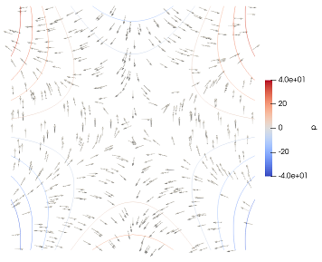

Solve the Stokes equation of colliding flow: Reddy formulation
Synopsis: Compute the solution of the Stokes equation of two-dimensional incompressible viscous flow for a manufactured problem of colliding flow. Hood-Taylor triangular elements are used.
The "manufactured" colliding flow example from Elman et al 2014. The Hood-Taylor formulation with quadratic triangles for the velocity and continuous pressure on linear triangles.
The pressure is shown here with contours, and the velocities visualized with arrows at random points. 
The formulation is the one derived in Reddy, Introduction to the finite element method, 1993. Page 486 ff.
The complete code is in the file tut_stokes_ht_p2_p1_reddy.jl.
The solution will be defined within a module in order to eliminate conflicts with data or functions defined elsewhere.
module tut_stokes_ht_p2_p1_reddyWe'll need some functionality from linear algebra, static arrays, and the mesh libraries. Some plotting will be produced to visualize structure of the stiffness matrix. Finally we will need the Elfel functionality.
using LinearAlgebra
using StaticArrays
using MeshCore.Exports
using MeshSteward.Exports
using Elfel.Exports
using UnicodePlotsThe boundary value problem is expressed in this weak form
Here $w_x, w_y$ are the test functions in the velocity space, and $q$ is the pressure test functions. Further $u_x, u_y$ is the trial velocity, and $p$ is the trial pressure.
function run()
mu = 1.0 # dynamic viscosity
A = 1.0 # half of the length of the side of the square
N = 100 # number of element edges per side of the squareThese three functions define the true velocity components and the true pressure.
trueux = (x, y) -> 20 * x * y ^ 3
trueuy = (x, y) -> 5 * x ^ 4 - 5 * y ^ 4
truep = (x, y) -> 60 * x ^ 2 * y - 20 * y ^ 3Construct the two meshes for the mixed method. They need to support the velocity and pressure spaces.
vmesh, pmesh = genmesh(A, N)Construct the velocity spaces: As an alternative to a previous treatment with a single vector space for the velocity, here we will use to vector spaces, one for each component of the velocity. The degrees of freedom are real numbers (Float64). The velocity mesh carries the finite elements of the continuity $H ^1$, i. e. both the function values and the derivatives are square integrable. Each node carries just one degree of freedom (1).
Uxh = FESpace(Float64, vmesh, FEH1_T6(), 1)
Uyh = FESpace(Float64, vmesh, FEH1_T6(), 1)Now we apply the boundary conditions at the nodes around the circumference.
locs = geometry(vmesh)We use searching based on the presence of the node within a box. The entire boundary will be captured within these four boxes, provided we inflate those boxes with a little tolerance (we can't rely on those nodes to be precisely at the coordinates given, we need to introduce some tolerance).
boxes = [[-A A -A -A], [-A -A -A A], [A A -A A], [-A A A A]]
inflate = A / N / 100
for box in boxes
vl = vselect(locs; box = box, inflate = inflate)
for i in vlRemember that all components of the velocity are known at the boundary.
setebc!(Uxh, 0, i, 1, trueux(locs[i]...))
setebc!(Uyh, 0, i, 1, trueuy(locs[i]...))
end
endNo we construct the pressure space. It is a continuous, piecewise linear space supported on a mesh of three-node triangles.
Ph = FESpace(Float64, pmesh, FEH1_T3(), 1)The pressure in this "enclosed" flow example is only known up to a constant. By setting pressure degree of freedom at one node will make the solution unique.
atcenter = vselect(geometry(pmesh); nearestto = [0.0, 0.0])
setebc!(Ph, 0, atcenter[1], 1, 0.0)Number the degrees of freedom. First all the free degrees of freedom are numbered, both velocities and pressures. Next all the data degrees of freedom are numbered, again both for the velocities and for the pressures.
numberdofs!([Uxh, Uyh, Ph])The total number of degrees of freedom is now calculated.
tndof = ndofs(Uxh) + ndofs(Uyh) + ndofs(Ph)As is the total number of unknowns.
tnunk = nunknowns(Uxh) + nunknowns(Uyh) + nunknowns(Ph)Assemble the coefficient matrix.
K = assembleK(Uxh, Uyh, Ph, tndof, mu)Display the structure of the indefinite stiffness matrix. Note that this is the complete matrix, including rows and columns for all the degrees of freedom, unknown and known.
p = spy(K, canvas = DotCanvas)
display(p)Solve the linear algebraic system. First construct system vector of all the degrees of freedom, in the first tnunk rows that corresponds to the unknowns, and the subsequent rows are for the data degrees of freedom.
U = fill(0.0, tndof)
gathersysvec!(U, [Uxh, Uyh, Ph])Note that the vector U consists of nonzero numbers in rows are for the data degrees of freedom. Multiplying the stiffness matrix with this vector will generate a load vector on the right-hand side. Otherwise there is no loading, hence the vector F consists of all zeros.
F = fill(0.0, tndof)
solve!(U, K, F, tnunk)Once we have solved the system of linear equations, we can distribute the solution from the vector U into the finite element spaces.
scattersysvec!([Uxh, Uyh, Ph], U)Given that the solution is manufactured, i. e. exactly known, we can calculate the true errors.
@show ep = evaluate_pressure_error(Ph, truep)
@show ev = evaluate_velocity_error(Uxh, Uyh, trueux, trueuy)Postprocessing. First we make attributes, scalar nodal attributes, associated with the meshes for the pressures and the velocity.
makeattribute(Ph, "p", 1)
makeattribute(Uxh, "ux", 1)
makeattribute(Uyh, "uy", 1)The pressure and the velocity components are then written out into two VTK files.
vtkwrite("tut_stokes_ht_p2_p1_reddy-p", baseincrel(pmesh), [(name = "p",), ])
vtkwrite("tut_stokes_ht_p2_p1_reddy-v", baseincrel(vmesh), [(name = "ux",), (name = "uy",)])
return true
end
function genmesh(A, N)Hood-Taylor pair of meshes is needed. The first mesh is for the velocities, composed of six-node triangles.
vmesh = attach!(Mesh(), T6block(2 * A, 2 * A, N, N), "velocity")Now translate so that the center of the square is at the origin of the coordinates.
ir = baseincrel(vmesh)
transform(ir, x -> x .- A)The second mesh is used for the pressures, and it is composed of three-node triangles such that the corner nodes are shared between the first and the second mesh.
pmesh = attach!(Mesh(), T6toT3(baseincrel(vmesh, "velocity")), "pressure")Return the pair of meshes
return vmesh, pmesh
end
function assembleK(Uxh, Uyh, Ph, tndof, mu)Here we demonstrate that the coefficient matrix, which is expected to have the structure
can be constructed in stages. Refer to the description below. The two functions below carry out the integration of two separate parts of the coefficient matrix.
function integrateApart!(ass, elits, qpits, mu)
uxnedof, uynedof, pnedof = ndofsperel.(elits)
kuxux = LocalMatrixAssembler(uxnedof, uxnedof, 0.0)
kuyuy = LocalMatrixAssembler(uynedof, uynedof, 0.0)
kuxuy = LocalMatrixAssembler(uxnedof, uynedof, 0.0)
for el in zip(elits...)
uxel, uyel, pel = el
init!(kuxux, eldofs(uxel), eldofs(uxel))
init!(kuyuy, eldofs(uyel), eldofs(uyel))
init!(kuxuy, eldofs(uxel), eldofs(uyel))
for qp in zip(qpits...)Step the quadrature point iterators in step: this assumes that in fact there is the same number of quadrature points in all the quadrature rules.
uxqp, uyqp, pqp = qp
Jac, J = jacjac(pel, pqp)
JxW = J * weight(pqp)Note that the gradients of the basis functions are not necessarily the same in those two velocity spaces. Hence we must grab the gradient from the correct space.
gradNux = bfungrad(uxqp, Jac)
gradNuy = bfungrad(uyqp, Jac)
for j in 1:uxnedof, i in 1:uxnedof
kuxux[i, j] += (mu * JxW) * (2 * gradNux[i][1] * gradNux[j][1] + gradNux[i][2] * gradNux[j][2])
end
for j in 1:uynedof, i in 1:uynedof
kuyuy[i, j] += (mu * JxW) * (gradNuy[i][1] * gradNuy[j][1] + 2 * gradNuy[i][2] * gradNuy[j][2])
end
for j in 1:uynedof, i in 1:uxnedof
kuxuy[i, j] += (mu * JxW) * (gradNux[i][1] * gradNuy[j][2])
end
end
assemble!(ass, kuxux)
assemble!(ass, kuxuy) # off-diagonal matrix needs to be assembled twice
assemble!(ass, transpose(kuxuy))
assemble!(ass, kuyuy)
end
return ass
end
function integrateBBTparts!(ass, elits, qpits)
uxnedof, uynedof, pnedof = ndofsperel.(elits)
kuxp = LocalMatrixAssembler(uxnedof, pnedof, 0.0)
kuyp = LocalMatrixAssembler(uynedof, pnedof, 0.0)
for el in zip(elits...)The iterators of the finite elements are stepped in unison.
uxel, uyel, pel = elInitialize the local matrix assembler with the global degree of freedom numbers, both for the velocity spaces and for the pressure space.
init!(kuxp, eldofs(uxel), eldofs(pel))
init!(kuyp, eldofs(uyel), eldofs(pel))
for qp in zip(qpits...)Step the quadrature point iterators in step: this assumes that in fact there is the same number of quadrature points in all the quadrature rules.
uxqp, uyqp, pqp = qp
Jac, J = jacjac(pel, pqp)
JxW = J * weight(pqp)
gradNux = bfungrad(uxqp, Jac)
gradNuy = bfungrad(uyqp, Jac)
Np = bfun(pqp)
for j in 1:pnedof, i in 1:uxnedof
kuxp[i, j] += (-JxW) * (gradNux[i][1] * Np[j])
end
for j in 1:pnedof, i in 1:uynedof
kuyp[i, j] += (-JxW) * (gradNuy[i][2] * Np[j])
end
end
assemble!(ass, kuxp)
assemble!(ass, transpose(kuxp))
assemble!(ass, kuyp)
assemble!(ass, transpose(kuyp))
end
return ass
endIn the assembleK function we first we create the element iterators. We can go through all the elements, both in the velocity finite element space and in the pressure finite element space, that define the domain of integration using this iterator. Each time a new element is accessed, some data are precomputed such as the element degrees of freedom, components of the degree of freedom, etc. Note that we need to iterate two finite element spaces, hence we create a tuple of iterators.
elits = (FEIterator(Uxh), FEIterator(Uyh), FEIterator(Ph))These are the quadrature point iterators. We know that the elements are triangular. We choose the three-point rule, to capture the quadratic component in the velocity space. Quadrature-point iterators provide access to basis function values and gradients, the Jacobian matrix and the Jacobian determinant, the location of the quadrature point and so on. Note that we need to iterate the quadrature rules of three finite element spaces, hence we create a tuple of iterators. All of these quadrature point iterators refer to the "same" quadrature rule: the same number of quadrature points, the same weights, and so on. However, the services these quadrature points provide do depend on the finite element space as well, for instance they would typically have different basis functions.
qargs = (kind = :default, npts = 3,)
qpits = (QPIterator(Uxh, qargs), QPIterator(Uyh, qargs), QPIterator(Ph, qargs))The matrix will be assembled into this assembler. Which is initialized with the total number of degrees of freedom (dimension of the coefficient matrix before partitioning into unknowns and data degrees of freedom).
ass = SysmatAssemblerSparse(0.0)
start!(ass, tndof, tndof)First we calculate the "A" part, using the function below. It is "assembled" into the assembler, which means that after this function finishes, the assembler represents this intermediate matrix
integrateApart!(ass, elits, qpits, mu)Then the "B-transpose(B)" part using this function is added to the assembler. When the function below finishes, the assembler represents the entire $K$ matrix.
integrateBBTparts!(ass, elits, qpits)Finally, we materialize the sparse stiffness matrix from the assembler and return it.
return finish!(ass)
endThe linear algebraic system is solved by partitioning. The vector U is initially all zero, except in the degrees of freedom which are prescribed as nonzero. Therefore the product of the stiffness matrix and the vector U are the loads due to nonzero essential boundary conditions. The submatrix of the stiffness conduction matrix corresponding to the free degrees of freedom (unknowns), K[1:nu, 1:nu] is then used to solve for the unknowns U [1:nu].
function solve!(U, K, F, nu)
KT = K * U
U[1:nu] = K[1:nu, 1:nu] \ (F[1:nu] - KT[1:nu])
endThe function evaluate_pressure_error evaluates the true $L^2$ error of the pressure. It does that by integrating the square of the difference between the approximate pressure and the true pressure, the true pressure being provided by the truep function.
function evaluate_pressure_error(Ph, truep)
function integrate!(elit, qpit, truep)
n_dp = ndofsperel(elit)
E = 0.0
for el in elit
dofvals = eldofvals(el)
for qp in qpit
Jac, J = jacjac(el, qp)
JxW = J * weight(qp)
Np = bfun(qp)
pt = truep(location(el, qp)...)
pa = 0.0
for j in 1:n_dp
pa += (dofvals[j] * Np[j])
end
E += (JxW) * (pa - pt)^2
end
end
return sqrt(E)
end
elit = FEIterator(Ph)
qargs = (kind = :default, npts = 3,)
qpit = QPIterator(Ph, qargs)
return integrate!(elit, qpit, truep)
endThe function evaluate_velocity_error evaluates the true $L^2$ error of the velocity. It does that by integrating the square of the difference between the approximate pressure and the true velocity, the true velocity being provided by the trueux, trueuy functions.
function evaluate_velocity_error(Uxh, Uyh, trueux, trueuy)
function integrate!(elits, qpits, trueux, trueuy)
n_du, n_du = ndofsperel.(elits)
E = 0.0
for el in zip(elits...)
uxel, uyel = el
uxdofvals = eldofvals(uxel)
uydofvals = eldofvals(uyel)
for qp in zip(qpits...)
uxqp, uyqp = qp
Jac, J = jacjac(uxel, uxqp)
JxW = J * weight(uxqp)
Nu = bfun(uxqp)
uxt = trueux(location(uxel, uxqp)...)
uyt = trueuy(location(uxel, uxqp)...)
uxa = 0.0
uya = 0.0
for j in 1:n_du
uxa += (uxdofvals[j] * Nu[j])
uya += (uydofvals[j] * Nu[j])
end
E += (JxW) * ((uxa - uxt)^2 + (uya - uyt)^2)
end
end
return sqrt(E)
end
elits = (FEIterator(Uxh), FEIterator(Uyh),)
qargs = (kind = :default, npts = 3,)
qpits = (QPIterator(Uxh, qargs), QPIterator(Uyh, qargs),)
return integrate!(elits, qpits, trueux, trueuy)
end
endTo run the example, evaluate this file which will compile the module .tut_stokes_ht_p2_p1_reddy.
using .tut_stokes_ht_p2_p1_reddy
tut_stokes_ht_p2_p1_reddy.run()This page was generated using Literate.jl.